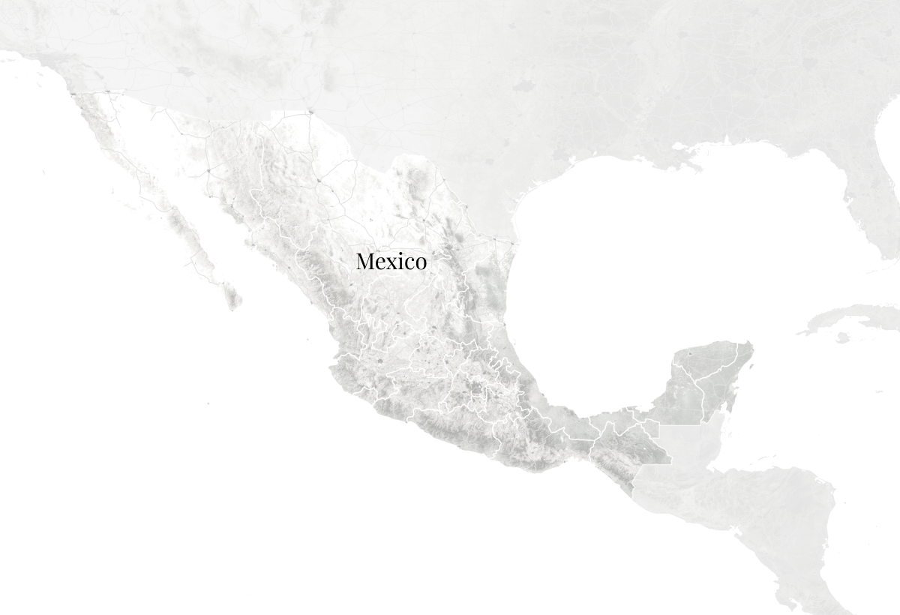

The Mexico Cartel Puzzle
Why don't cartels shrink when members are removed?
On February 22, 2026 Mexican security forces killed "El Mencho", the leader of one of
Mexico's most powerful cartels: Jalisco New Generation Cartel (CJNG). In reaction, cartel
violence erupted all over Mexico. Within hours, coordinated violence and disruption spread
across Mexico. Authorities recorded 252 roadblocks across 20 states, alongside burning
vehicles and businesses and attacks on government and security facilities.
Instead of collapsing, CJNG rapidly mobilised hundreds of members to demonstrate its
continuing power. This episode highlights a persistent paradox. For decades, authorities
have targeted cartel members, seized illicit goods, and disrupted supply chains, while
cartels simultaneously suffer massive losses in bloody territorial wars. Yet, these
organizations consistently adapt, rebuild, and even expand.
- Many function as decentralized networks
- They control territory and act like shadow governments
- They have other key businesses – apart from drugs
A new paper by Prieto-Curiel et al. aims to explain the dynamics behind this paradox.
Estimating cartel membership is difficult. Because cartels operate clandestinely, their true
size cannot be directly observed — available data capture only the visible "tip of the
iceberg", leaving a substantial "dark figure" of unobserved membership. To address this
challenge, the authors developed a mathematical model that combines observable data with
population dynamics to estimate the size and evolution of Mexico's hidden cartel population.
It works like this:
For decades the police has incapacitated people from the cartels. According to a report
from the Mexican Government in 2022, 65,149 organised criminal group members were arrested
from 2018–2022.
Cartels fight each other. With some assumptions, Prieto-Curiel et al. estimate numbers of
dead cartel members based on observed killings and persons reported as missing. According to
data from the Uppsala Conflict Data Program (UCDP), only 160 incidents of cartel clashes
resulting in at least one death were recorded in 2013. In 2021, the number of such clashes
peaked at 3,753.
By looking at these numbers over many years, Prieto-Curiel et al. could estimate how many
members the cartels had to be recruiting and how big they are.
The could also guess, how many members left the cartel.
Main findings
Based on the model estimations, Mexican cartels had approximately 160,000–185,000 members in 2022, collectively making them one of Mexico's largest employers.
Despite substantial losses, cartels needed to recruit approximately 350–370 people every week simply to avoid declining due to the combined effects of conflict, incapacitation, and saturation. This points to extremely high organisational turnover: cartels continually lose members but recruit enough new people to replace these losses and continue growing.
Recruitment therefore provides the central answer to the puzzle: cartels are able to maintain or expand their membership despite substantial losses because of their capacity to continuously recruit new members.
What would happen if the state increased interventions which further increased the rate of incapacitation? Increasing incapacitation alone could result in more cartel members and more homicides, rather than necessarily weakening cartels. Simply removing existing members therefore does not necessarily address the underlying dynamics that allow cartel organisations to reproduce themselves.
By contrast, reducing recruitment produces substantially greater reductions in both cartel membership and violence.
Key takeaway: Cartels survive not because they avoid losing members, but because they are able to replace them.
A follow-up question naturally arises: what can we do to prevent or slow down this intense recruitment? Before exploring potential solutions, it is important to understand why people join organised criminal groups in the first place. Research points to several key factors that may shape people's pathways into these groups:
Social relations and networks
Many people enter organised criminal groups through existing social networks, including family, friends, and neighbourhood connections. Knowing someone who is already involved can help build trust and provide access to criminal opportunities, making recruitment into the group easier.
Criminal background and skills
Like legal organisations, organised criminal groups often look for people with relevant experience and skills. People with previous criminal experience, relevant knowledge, or practical skills may therefore be more likely to be recruited, as they already know how criminal activities work and can contribute to the group.
Economic and contextual factors
Strong financial incentives, lack of job opportunity, and economic hardship make people much more vulnerable to recruitment by criminal groups. Many join simply for quick cash, especially when established illegal markets make crime an easy, alternative way to earn a living.
Repeated exposure, socialisation and normalisation of organised crime
Repeated exposure to organised crime through family, peers, and the wider local community can shape how individuals perceive criminal activity from an early age. Where cartels have an established community presence, criminal activities and cartel-related work may become familiar, normalised, and perceived as a viable form of employment.
Potential interventions
- Mentoring programme to children and teenagers who are from disadvantaged areas
- Family-support programme
- Rehabilitation and reintegration programme to previous cartel members
- Education
- Vocational training and job opportunities
- Financial supports
- School and community based preventions to reduce the exposure to criminal activities
- Law enforcement operations targeting recruitment channels